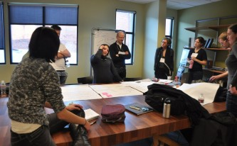
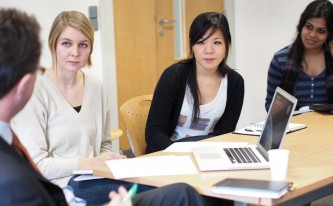

Student Design Challenge
Kevin Gaunt, from Umeå Institute of Design wins the 2014 IxDA Student Design Challenge
Seven finalists, competing as three individuals and two pairs, gave four-minute presentations on Friday, February 7, 2014 to a packed room of conference-goers at Interaction14 in Amsterdam. They were chosen from 72 entries received worldwide in November to come to Amsterdam to participate in the 72-hour, charrette-style challenge.
It was the culmination of three days’ work using systems and interaction design principles and methods to address the Information For Life challenge set by the Bill and Melinda Gates Foundation. The awards were presented on Saturday at the 2014 Interaction Awards ceremony.
Winners received prizes to help them launch their careers: books from Rosenfeld Media and Cooper; design software from Adobe, Autodesk, Axure, and Clearleft; training from Cooper U and User Interface Engineering (UIE); conference registration to UX Australia; a subscription to Uber conference; and a $100 gift certificate from Core77.
This year’s winners are:
1st Prize — Kevin Gaunt
Umeå Institute of Design, Umeå Sweden
2nd Prize — Julie Blitzer & Hadar Geva
Domus Academy, Milan, Italy
3rd Prize — Dharmesh Ba and Karan Dudeja
National Institute of Design, Gandhinagar, Gujarat, India
Runner-Up — Nidhi Jalwal
University of the Arts, Philadelphia, PA, USA
Runner-Up — Melody Kim
UC San Diego, San Diego, CA, USA
The finalists worked during the Interaction14 conference at the offices of Ijsfontein Interactive Media, co-designing and testing concepts with doctors and public health students from the Royal Tropical Institute, and further developing concepts on-site at the conference at the SDC Zoo.
Skye Gilbert, Program Officer for Vaccine Delivery at the Gates Foundation scoped the challenge for the finalists during a master class on Tuesday, before the start of the conference, asking the students to develop cost-effective and culturally appropriate design interventions to help families in remote rural regions of developing countries gain access to live-saving health information. The global public health community could save millions of lives in the coming years by gaining the trust of families and informing them about how basic western health practices. Health organizations remain challenged by how to reach these populations when the children or their parents do not speak their country’s national language or cannot read.
In addition to Ms. Gilbert, Alice Konijnenberg, MD of the Pennywhistle Foundation, Amsterdam and John Payne of Moment Design, New York mentored the students throughout the challenge along with SDC chairs Izac Ross from Cooper and Dianna Miller from Fidelity Center for Applied Technology.
Why is the elephant so big and strong?
Kevin Gaunt’s concept uses visual storytelling aides to communicate key life saving interventions to mothers waiting in public health centers in rural areas of Zambia and then encourages word-of-mouth sharing of health information in a narrative form, similar to the community’s own fables. After a mother hears the story, she is given an amulet with a stone from the village and encouraged to retell the story when someone asks what the amulet means.
Ms. Gilbert said: “Kevin’s solution can scale quickly and brings health information into the community dialogue using people’s downtime. With the use of a pebble, strung on a necklace like an amulet, he tied an artifact to storytelling that would normally be of no value. It reinforces the memory of the information. With the use of a pebble he has created something meaningful from a commonly available natural object.”
Grow with Kirikou
Julie Blitzer & Hadar Geva developed a kit with health records and instructional calendar cards that uses tradition to make modern medicine more accessible. The kit can be adapted for any region if the key traditional elements are updated to reflect local customs. Because the cards are easy to produce, Ms. Gilbert noted that the idea could be cost-effectively prototyped and tested on the ground in several contexts.
Mamta Calendar
Dharmesh Ba and Karan Dudeja designed a calendar especially for the Indian context. They took a calendar that is frequently found in Indian homes customized it for first-time mothers. It reminds the mother of important vaccination dates and crucial health care tips that are often taken for granted. It compliments the existing Mamta child health record card and the system around it by converting information into meaningful knowledge that encourages better community practices.
SisterMedic
Melody Kim’s two-way radio is durable and cost-effect to produce and distribute to village meeting centers. They system addresses the challenge of literacy and access to information by delivering critical health tips and announcements from nearby clinics. By calling the number printed on the radio, rural women can hear messages such as test results before traveling to the health clinics.
Sampoorna Shishu Swasthya Yogna (“Complete Child Health Plan”)
Nidhi Jawal’s community incentive system addresses the intention-action gap that mothers face in the villages of Rajasthan (India). The system engages members from a mother’s closely knit community, including her mother-in-law— the authority figure in the family—to be more responsible in supporting the mother in best healthcare practices through non-monetary incentives.
The 2014 Challenge
For as low as 10 cents per child, the child health record is a critical component of current health information systems worldwide.
This year, the Gates Foundation and the IxDA challenge you to consider how to reach remote populations by designing ways to improve how, where, and when this record is distributed, accessed and used in order to make it a more effective tool for health information and education throughout childhood.
Over six million children under the age of 5 died last year; more than half of these deaths could have been prevented with existing interventions. The global public health community could save millions of lives in the coming years by gaining the trust of families and informing them about how to access effective interventions. But, health organizations remain challenged by how to reach remote populations with life-saving health information when these children or their parents do not speak their country’s national language or cannot read.
Download the full brief for more information from the Gates Foundation and IxDA on the theme background and design considerations for the Challenge.
Related initiatives
 The Gates Foundation has chosen the Student Design Challenge to complement the foundation’s Records for Life contest that launched in Fall 2013. The Records for Life contest focuses on the design of the record itself to make it easier to interpret and use. As a complement to Records for Life, the IxDA Student Design Challenge will put focus on the design of the experience: how families use the record as an informational tool that prompts choices and actions that lead to better healthcare for children.
The Gates Foundation has chosen the Student Design Challenge to complement the foundation’s Records for Life contest that launched in Fall 2013. The Records for Life contest focuses on the design of the record itself to make it easier to interpret and use. As a complement to Records for Life, the IxDA Student Design Challenge will put focus on the design of the experience: how families use the record as an informational tool that prompts choices and actions that lead to better healthcare for children.

Examples of these newly designed records will be available to SDC competitors in Amsterdam. See the Records for Life brief for more information.
About the Student Design Challenge
Now in its fifth year, the IxDA Student Design Challenge will run during the Interaction14 conference in Amsterdam, February 4-8, 2014. Finalists will be selected from an international pool of exceptional graduate and undergraduate students.

Finalists will be selected to demonstrate their skills in the 72-hour challenge in Amsterdam, kicking off with a master class with industry mentors on February 4.
Finalist reflect the diversity of interaction design education today and the excellence that is emerging from a new generation of designers.
The Challengers will have access to workspace provided at IJsfontein Interactive Media. For the first time this year, they will also have access to The SDC Zoo, a space in the main hall of the conference to engage conference-goers in discovery research and experience prototyping. Students will present their work onstage on February 7 and the winner will be announced at the 2014 Interaction Awards on February 8.
Prizes
Our panel of judges will award the most promising finalists a scholarship to attend Interaction14 in Amsterdam, including:
- Travel to Amsterdam
- Accommodation in Amsterdam
- Complimentary student registration at the conference
- Registration for a dynamic master class, held before the conference, to address these design challenges
- Additional prizes will awarded on site
Qualifications
The Challenge is open to both graduates and undergraduates. Participants must be currently enrolled in or have graduated in 2013 from a program in interaction design or a related design field.
The Audition
To enter the challenge, students submitted a 3-minute video, a 150 word summary, and 2-3 samples of their work. In their video and summary they had to explain:
- Their background as a designer.
- Why they want to come to Amsterdam and continue working on this year theme, “Information for Life”.
- Their perspective on the Challenge Theme and how they would approach the process of designing a solution to the challenge.
The judges looked for interaction/experience design ability and the ability to communicate thinking on the theme, rather than examining any design work already done to create solutions around the theme.
Examples from previous years
Play 2013
- Bethany Stolle, Austin Center for Design
- James McIntyre, Malmö Högskola
- Ariel Zilnik, Carnegie Mellon University
2012 Future of News
- Priscilla Mok –Carnegie Mellon University, Future sf News, 2012
- Siri Jojansson Umeå Institute of Design, Future of News, 2012
- Jaime Krakowiak, Austin Center for Design
Jury
- Angel Anderson, VP / Experience Director, Crispin Porter + Bogusky
- Miles Begin, Director of Design, Enterprise Growth, American Express
- Peter Boersma, Interaction Design Director at Blast Radius
- MJ Broadbent, Principal, MJ Broadbent Design
- Wayne Coughlan, Cape Peninsula University of Technology
- Dustin DiTommaso, Vice President Experience Design, Mad*Pow
- Susan Dybbs, Managing Director of Interaction Design, Cooper
- Ana Domb Krauskopf, Director, School of Interaction Design, Universidad VERITAS
- Penny Hagen, Design Strategist, Smallfire/ UX Director DAN Auckland
- John Payne, Principal, Moment
- Steve Portigal, Principal, Portigal Consulting
- Andy Polaine, Interaction & Service Designer, Lecturer, Writer, Researcher
- Chris Noessel, Managing Director, Cooper
- David Sherwin, Interaction Design Director, frog
- Samantha Soma, GE Design & Experience Studio
- Bethany Stolle, Winner, 2013 Student Design Challenge
- Sudhindra V., Creative Director – Experience Design, SapientNitro
- Jeremy Yuille, Program Director, Communication Design at RMIT University
Chairs
- Dianna Miller, Innovation Catalyst, Fidelity Investments
- Izac Ross, Interaction Designer, Cooper
Questions? Email us at student-challenge@ixda.org